Everyone Had The Content. Nobody Had The Order.
A four-person team builds a learning platform for people trying to break into UI/UX, and immediately runs into the same problem every new designer faces: too many directions, not enough runway to chase them all.
Scroll to begin ↓"We weren't short on ideas. We were short on time. Figuring out which ideas earned a place in the MVP was the real design problem."
The Problem
For our final group project, the brief was open: pick a product, design it, and code it ourselves. That last part mattered, since it asked all four of us to translate our own Figma file into a working site, the muscle that separates a designer who can spec something from one who understands what it costs to build.
We chose to build for people just outside the field looking in, aspiring UI/UX designers who know they want in but don't know where to start. There's no shortage of UI/UX content online, tutorials, blog posts, bootcamp ads, but very little of it is sequenced. We set out to build UI/UX Nest: a guided starting point, not another firehose of scattered resources.
Research & Discovery
We ran interviews and a short survey with people either learning UI/UX on their own or actively considering it, to find out where they got stuck. One answer came back again and again, in different words but the same shape: people didn't need more material, they needed to know where to start and what order to learn things in. It was a small, informal round on a fixed bootcamp timeline, not a validated study, but the pattern held consistently enough that finding a starting point became the spine of the whole product instead of one feature among many.
Not a lack of resources, but no clear starting point among the resources that already exist.
A structured learning path, something that told them what to learn first, second, and after that.
Several wanted help that went past theory, into building a portfolio and resume.
People learn differently, some wanted to watch, some wanted to read, neither alone was enough.
Define & Ideate
With four people, a self-chosen concept, and no client to draw a line for us, scope creep showed up immediately. Everyone had a feature they were excited about, and most of them were genuinely good ideas. The real question was fit: which ideas served "help someone find their starting point," and which were exciting tangents that would eat the time we didn't have.
Sorting features this way turned an emotional argument, whose idea gets cut, into a practical one: does this serve the starting point, or a more advanced stage we don't have time to build well. That question didn't make every disagreement painless, but it gave us a shared standard to argue against instead of arguing against each other.
Design Decisions
A curriculum that's a path, not a library
The core deliverable became a phased curriculum, a sequence of phases, each broken into topics, each topic paired with a short video and a written summary of that same video. The pairing was deliberate. Research told us people learn differently, some want to watch, some want to read a quick recap, and building both into every topic meant neither type of learner had to settle.
Introduction to UI/UX
The absolute starting point: what the field is, how UI and UX differ, and the vocabulary everything after this builds on.
Video + summaryCore concepts & tools
Design principles and a first hands-on pass at Figma, the tool nearly every later step assumes familiarity with.
Video + summaryPortfolio & resume
Turning what was just learned into something a hiring manager can evaluate.
Guided stepsCareer Paths
A breakdown of the roles inside a UI/UX team, what each one actually does, and what it pays, so a learner can see where they might fit before picking a specialty.
Role referenceWireframes first
Before any color or type decisions, we blocked out every page in the product at low fidelity, the homepage, topic grids, individual tutorial and concept pages, and the job-description page that would later become Career Paths. Every image was a gray box and every label read "Topic 1." We were testing structure, not style.
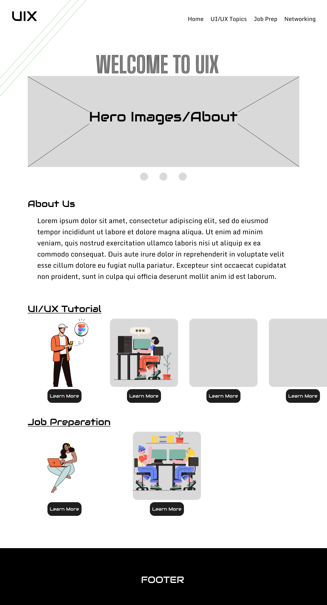
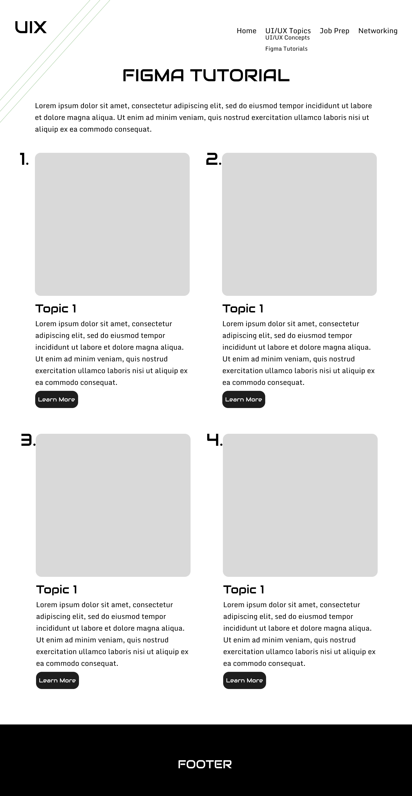
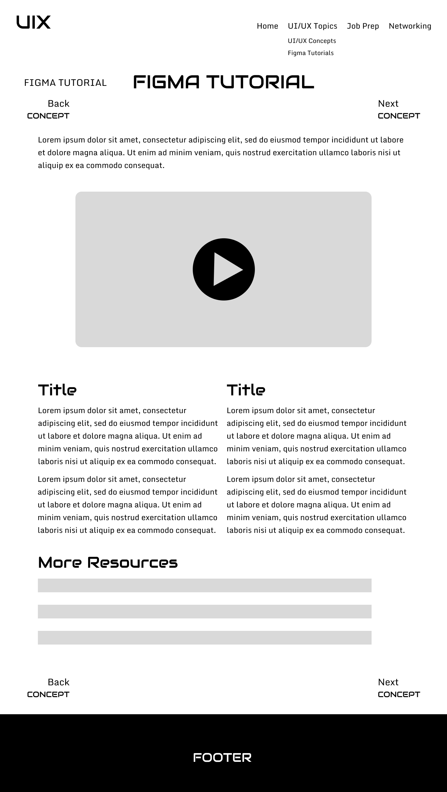
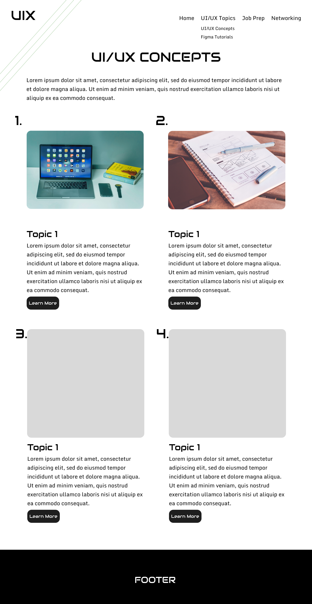
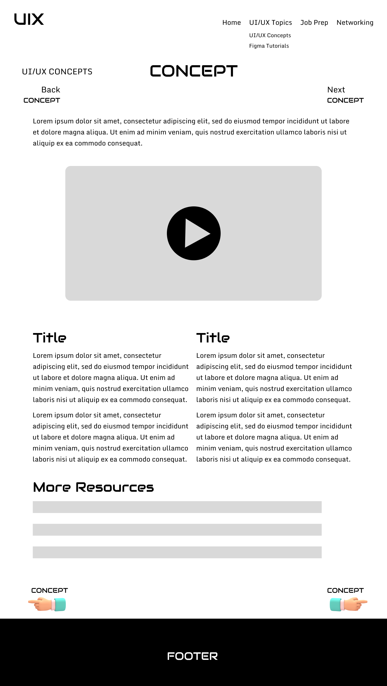
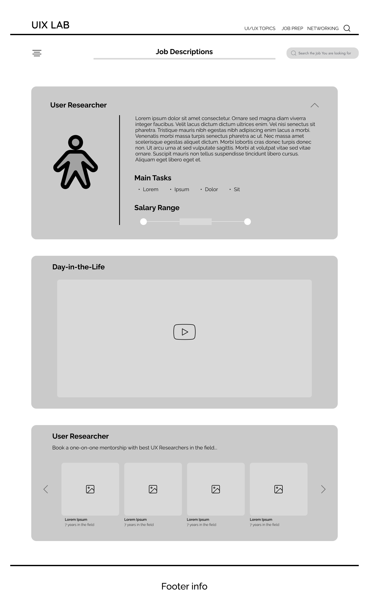
UI/UX Topics and UI/UX Concepts shared one wireframe shape early, which made it obvious the two could share a single template in code. The job-description wireframe did the same setup work for what became Career Paths.
From wireframes to the built product
Once the structure held up, we moved into hi-fi. The gray boxes became real thumbnails and screenshots, the placeholder type became Monda and Audiowide, and the topic grid picked up the color coding described below.
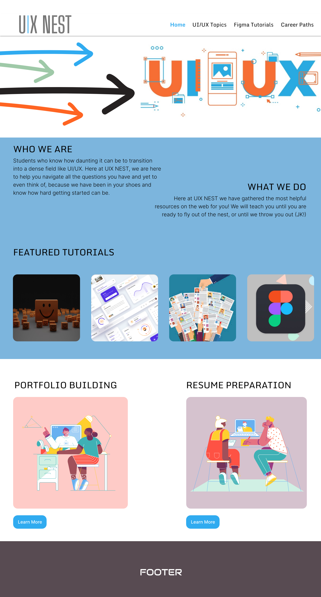
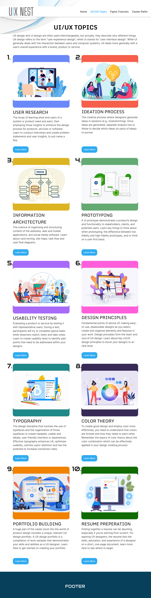
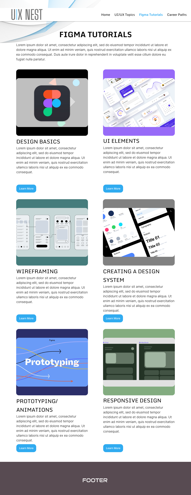
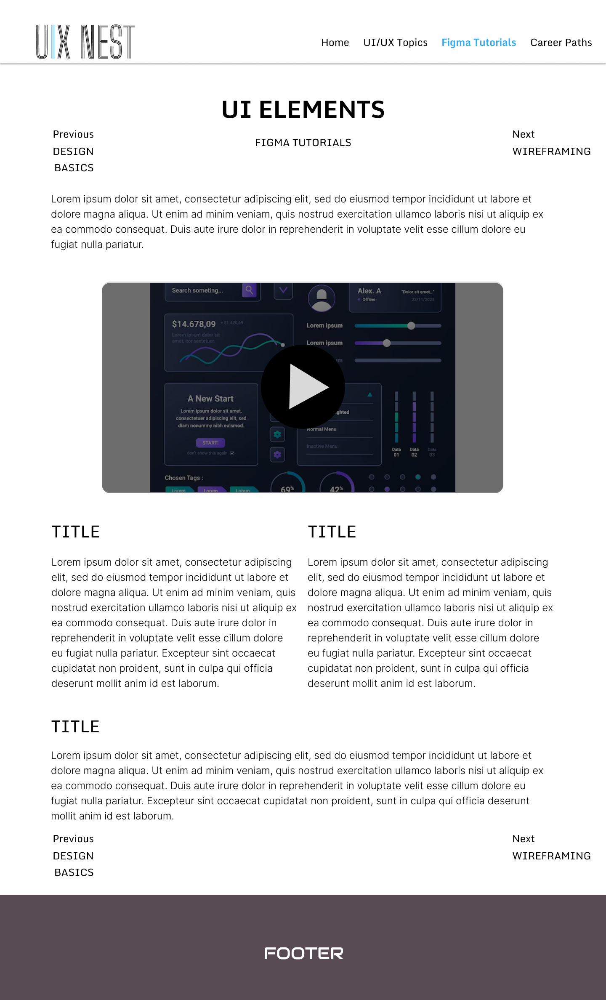
Job prep started as two ideas: a reference for roles and pay, and a networking page pointing to communities and events. The networking half got cut for time in the scope pass above. What got built instead was Career Paths, one page per role, each with a plain-language description, main responsibilities, a salary range, and a short "day in the life" video from someone working in that role.
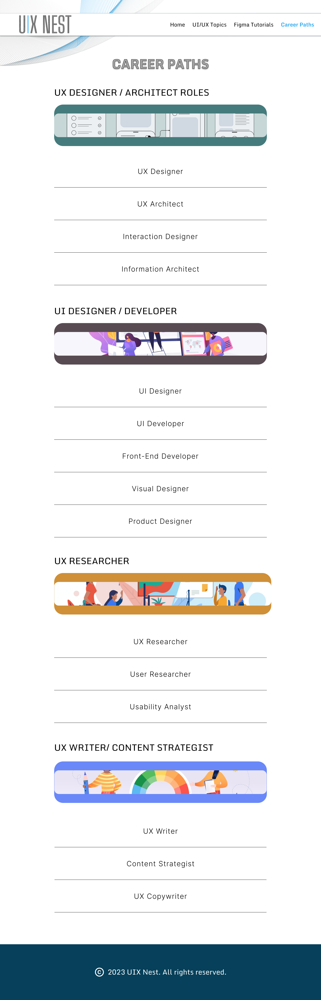
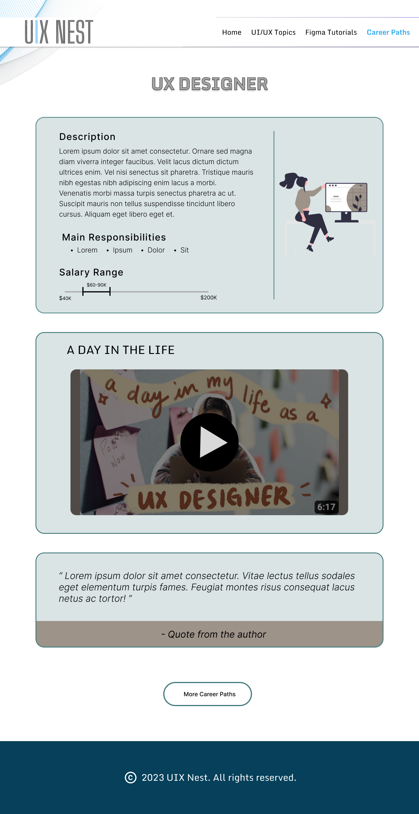
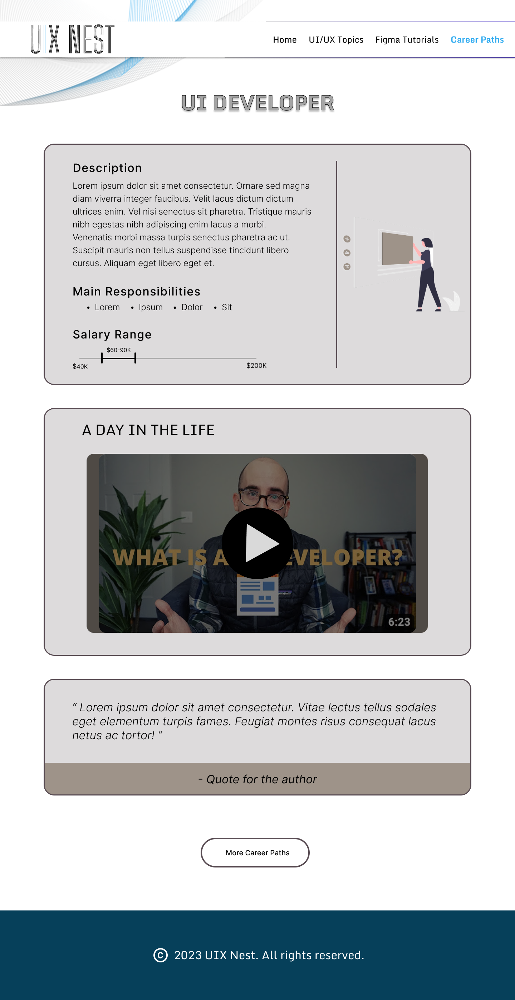
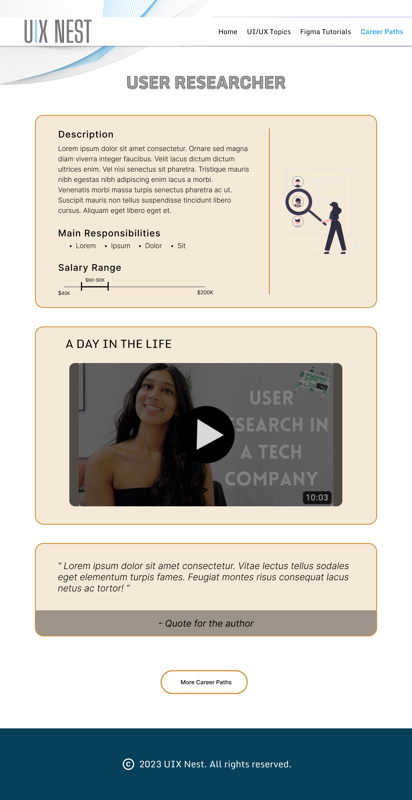
Color as a wayfinding system, not decoration
Once the curriculum had multiple phases and topics, the real risk had nothing to do with visual dullness. It was a learner losing track of where they were. We assigned a distinct color to each topic area and carried it consistently across every related screen, the topic card, the video page, the written summary. That gave a learner a quiet, constant answer to "where am I in this," without needing a progress bar to spell it out every time.
A style system built to hold four people together
Because four people were building different pages at the same time, the style system had to work as infrastructure, not decoration. Without a shared visual language locked down early, each teammate's section would have drifted, slightly different blues, different type hierarchies, different button shapes. The system gave everyone the same rules to code against.
Sky blue carries buttons and active states, deep teal grounds the layout, and the four highlight pairs give each curriculum topic its own quiet color cue. Monda handles headlines, Audiowide stamps the topic numbers, Inter Light carries body copy. The pop art illustrations counterbalance a page with a lot of information on it.
Splitting design and code without losing consistency
Because we each had to code our own sections, I coded the video and curriculum pages myself, then went back through every teammate's code afterward to check it against a shared structure, naming conventions, component patterns, the handful of decisions that keep four people's code from reading like four different sites stitched together. As team lead, my job was less about having the loudest opinion in the room and more about making sure everyone's ideas made it into the product fairly, while still holding the line on what the MVP needed to be.
Putting It in Front of People
We tested the prototype with people in roughly the same position as our original interviewees, and the findings validated the two biggest structural bets we'd made.
- The minimalist layout was easy to follow, and testers said it made the key features, the curriculum path especially, stand out rather than compete with decoration
- The per-topic color coding helped people track where they were in the curriculum without being told explicitly
- Pairing video and written summaries on every topic was called out specifically as useful for accommodating different learning styles
The same testing surfaced three of the features we'd cut for scope, live tutoring, mock interview practice, and a way to connect with other learners, as things people wanted next. We took that as confirmation rather than a miss. Those ideas were already good, and now we had real user signal pointing at them as the right next phase, not the right first one.
Where This Landed
This was a bootcamp final project on a fixed timeline, not a shipped product, so there's no deployment or usage data here. What follows is the process: real interviews that shaped a genuine prioritization decision, a built and reviewed codebase across four people, and usability testing that confirmed both what we built and what we were right to defer.
What I'd do differently: set an explicit scope budget before ideation started, not during it. The ledger above worked, but we built it reactively, after feature ideas had already multiplied and people were attached to them. Naming the budget up front would have made the cuts feel like a plan we'd agreed to, rather than a negotiation we had to have in the moment, every time.